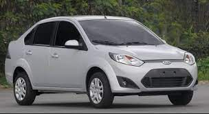
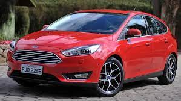
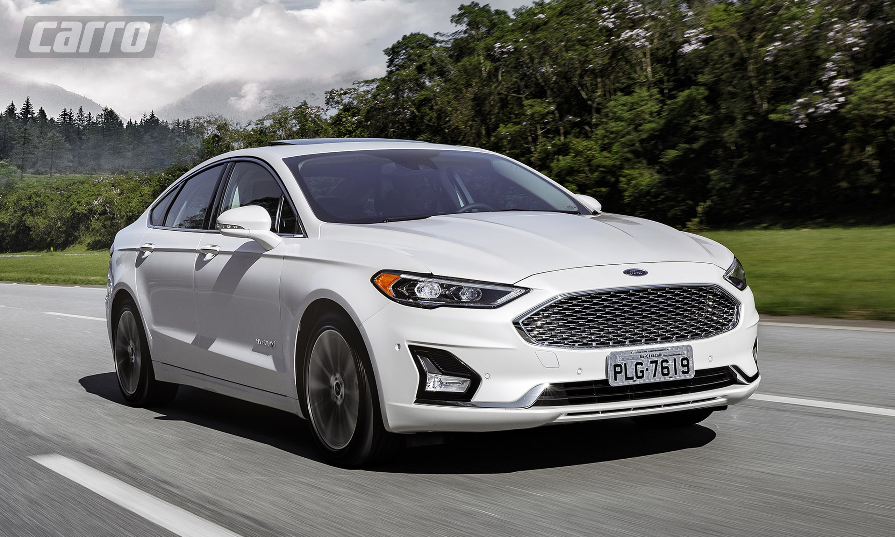

Itens de Série: 6 airbags, ar condicionado automático e digital, acendimento automático dos faróis, sistema anti-derrapagem com controle de estabilidade e rolagem, faróis com regulagem de altura, volante com regulagem de altura e profundidade, bancos dianteiros.
Cores Disponíveis: Vermelho, Cinza, Branco, Preto, Azul

Ford Fiesta
Ano: 2015
Km: 128.570
Itens de Série: Excelente estabilidade em curvas, engates precisos no câmbio, uma suspensão adequada, direção na medida certa, excelente espaço interno e um motor que responde prontamente quando solicitado.
Cores Disponíveis: Vermelho, Branco, Preto, Azul, Cinza, Verde

Ford Focus
Ano: 2018
Km: 55.000
Itens de Série: ar-condicionado automático e digital de duas zonas, bancos revestidos em couro, revestimento da manopla de câmbio em couro, bolso porta-revistas atrás dos bancos dianteiros.
Cores Disponíveis: Vermelho, Cinza, Branco, Preto, Azul

Ford Fusion
Ano: 2021
Km: 30.000
Itens de Série: controle de tração, estabilidade e oito airbags, bem como alerta de colisão frontal, alerta de tráfego cruzado, sensor de estacionamento dianteiro, alerta de ponto cego, sistema de permanência.
Cores Disponíveis: Preto, Cinza, Branco, Vermelho, Azul